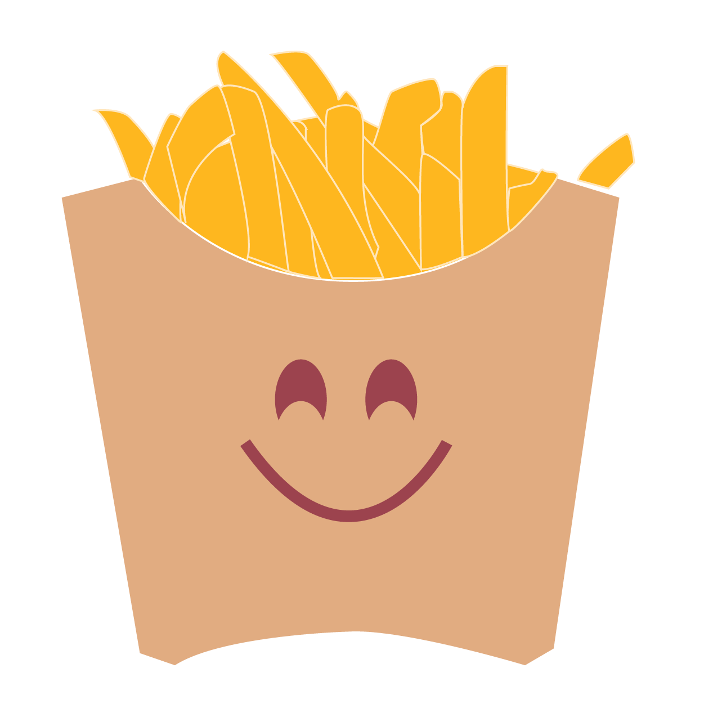
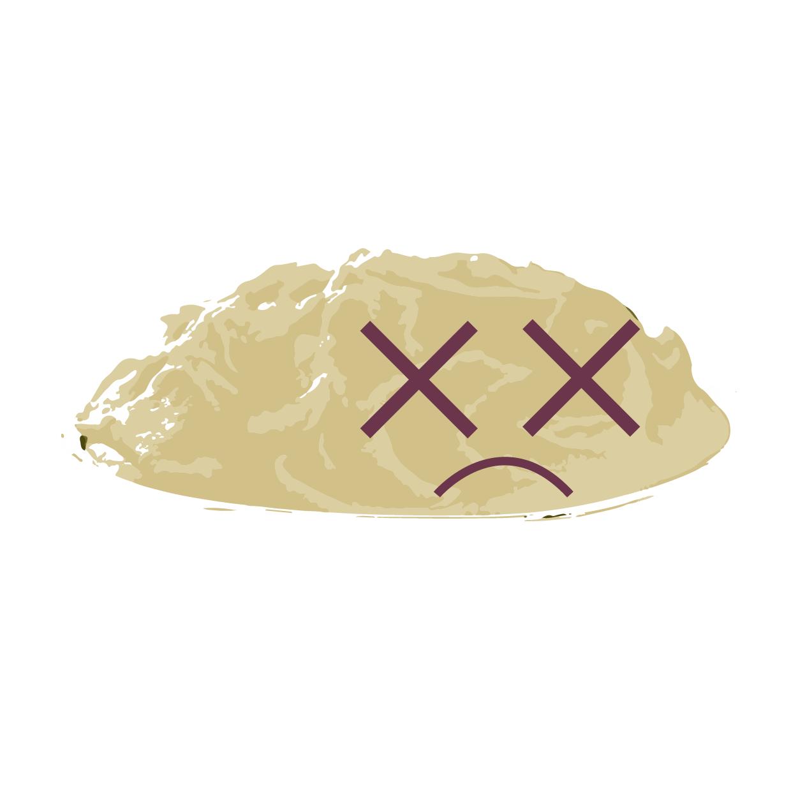

Logan Jones
Buen amanecer para ti, amigo, Soy un caballero notable, a quien le gusta nada más que boxear con el hombre correcto. Lo primero que la gente suele notar de mí es mi adorable personalidad, seguido de mis piernas desgarradoras. Espero que encuentres mis piernas tan especiales como los gatitos recién nacidos, y mis abdominales tan increíbles como el primer alunizaje. Trabajo como actor, ayudando a los lectores. Esto me permite ejercitar mis habilidades: vender arenques y pintar. Mi ídolo es Brad Pitt. Cuando estoy luchando con mi trabajo, pienso en Brad Pitt y me siento inspirado para continuar. Una vez vi a Brad Pitt en una gasolinera, así que siento que tenemos una conexión profunda, casi espiritual, como la niebla en un día de otoño, o similar. Los objetivos de mi vida incluyen:
- Estrella en la próxima película de Star Wars.
- Escribe un soneto que capture tu belleza
- Conviértete en el mejor actor que puedo ser
- Ayuda a todos los lectores en el mundo
- Si eres el hombre adecuado para mí, serás enérgico y esperanzador. No tendrás miedo de ser ellos mismos y tendrás un respeto saludable por la vida. Mi fecha ideal implicaría ir de excursión en Australia con un jengibre a mi lado. Mientras estamos allí, escribo poesía sobre tus sólidos abdominales bajo la luz de la luna. La sonrisa del hombre adecuado iluminará mi día como alguien encendiendo una bengala en un particularmente tormentoso 5 de noviembre. Tus sólidos abdominales me harán temblar como si estuvieras sentado en el banco de un parque cuando pasara un autobús de dos pisos. Que la fuerza esté con usted.  Seguir buscando?